The Git Status page provides a summary of the current state of a Git clone associated with your Orion account. This page shows changes in your working tree, staged changes that are ready to commit, and a summary of commits in the active branch. For help with common Git tasks see Working with Git.
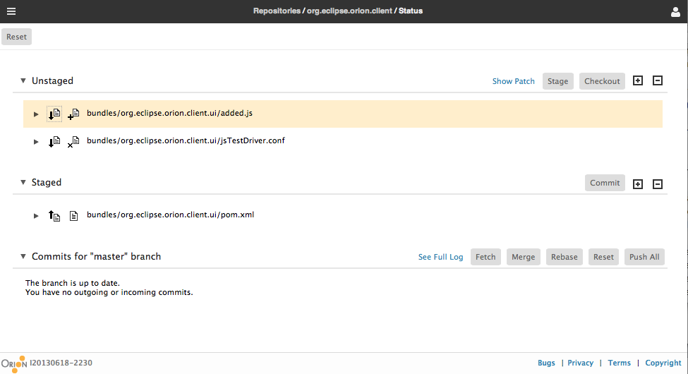
Typically, there are three types of changes: adding, changing and deleting. The types of changes are indicated by icons on the left of the files.
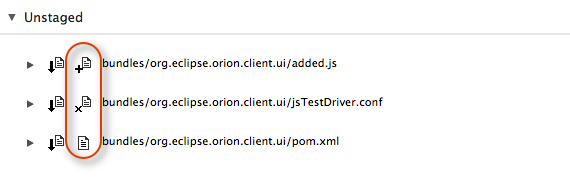
Files with conflicting changes will have additional annotations.
You can select files from the unstaged section and click on the Show Patch link in the section header to view the patch on the selected files. Please note that if you copy the patch contents from the browser and paste it into a patch file, make sure that the patch file has an empty line at the end. This will assure you to apply the patch successfully from either Orion or the git command line.
To view the code diff for a particular change, you can use the twistie icon next at the left of the change to open the diff. From there, you can traverse the changes using the commands above the diff.
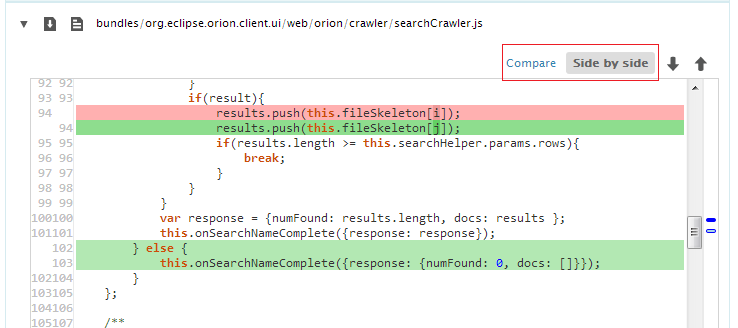
To view the diff in the side by side mode, just click on the button.
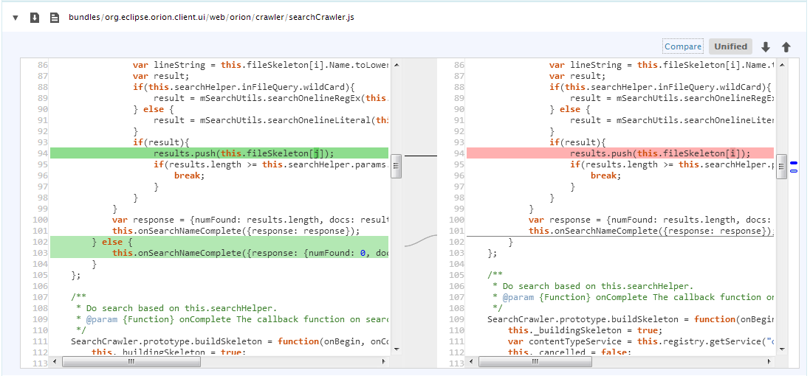
You can also open a separate Compare page by clicking the Compare link. The compare page allows you to merge changes or perform further edits on your uncommitted changes.
You can also use the expand and collapse buttons at the top of the Unstaged and Staged sections to open and close all of the diffs in the list at once.
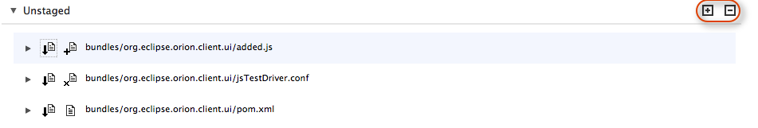
Before you can commit a file in Git, it must be added to your local index. This process is called staging, or Git add. You can stage one file at a time using the stage icon adjacent to the file.
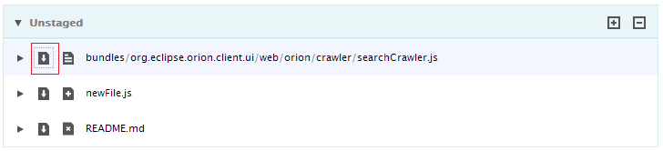
You can also stage one or more changes by selecting a group of changes (with Ctrl+Click or Shift+Click) and then clicking the Stage button at the top of the unstaged list.
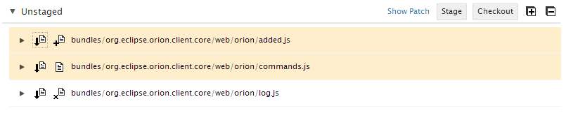
When the changes are staged, the files will be moved to the Staged area.
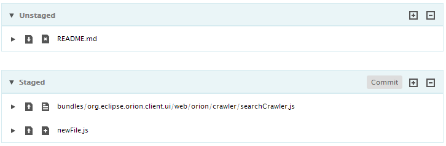
Suppose you have made a change in your working copy that you want to discard. You can discard a change by selecting one or more files that you wish to revert and performing a checkout of the file contents from your local index.
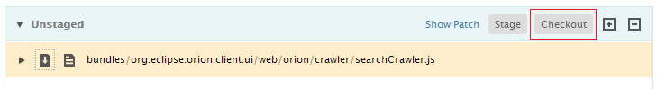
Clicking on the action pops up the confirmation dialog. Click OK to restore the change from the index or Cancel to cancel the action.
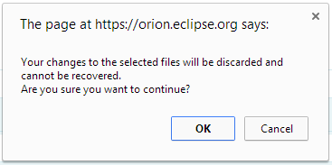
You can reset all the unstaged and staged changes by clicking on the Reset button in the main toolbar.
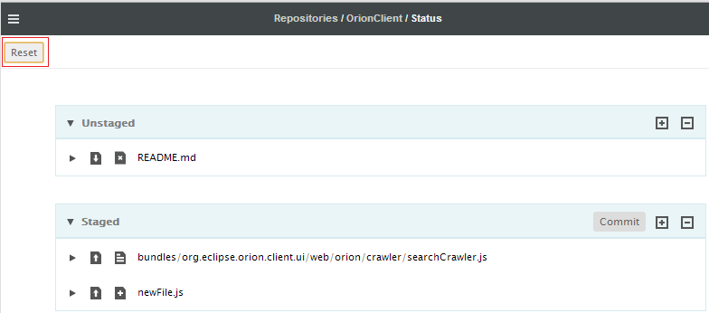
A confirmation dialog pops up when you click on the action. Click OK to reset the changes from the index or Cancel to cancel the action.
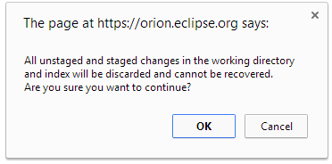
If you decide you don't want to commit a change, but want to continue working on it, you can remove it from your index by unstaging it. You can either unstage changes one by one with the icon, or select changes and use the Unstage button to unstage a group of changes.
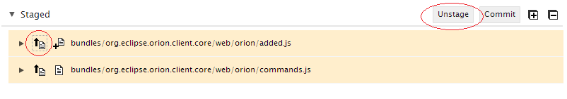
Once changes are staged, you can use the Commit button to commit the changes. You will be prompted for a commit message. The Amend check-box is used to amend the last commit. Once you've provided a commit message, you can use the Enter key or Submit button to finish the commit.
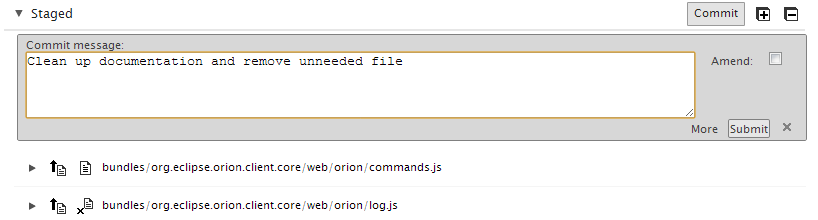
The git status page also shows the recent commits from your local branch. You can manage the local branch using the commands at the top of the area, such as fetch, merge, and push.
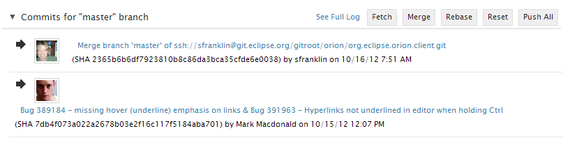
Clicking on the See Full Log navigates to the Log page for the local branch. There you can refer to the details of the commits, or switch to the remote tracking branch log.
The typical workflow for committing changes on this page involves reviewing and staging changes, committing them, and then pushing them to the remote tracking branch. Before pushing changes, it is useful to first click on the Fetch button to fetch all the recent commits, and to Merge them into your local branch. Once commits from the remote branch are merged, click on the Push button to push all the outgoing commits to the remote tracking branch.
This document is maintained in a collaborative wiki. If you wish to update or modify this document please visit http://wiki.eclipse.org/Orion/Documentation/User_Guide/Reference/Git_Status_page